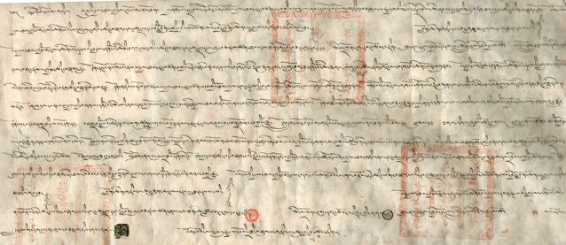

Le trait√© Tibet-Mongolie de 1913, une preuve de l’ind√©pendance du Tibet
vendredi 14 novembre 2008 par Rédaction
" Dans les premi√®res lignes du trait√© Tibet-Mongolie de 1913, le Tibet et la Mongolie attestent s’√™tre lib√©r√© de la domination mandchoue et avoir chacun constitu√© un √©tat ind√©pendant. "
Au cours des si√®cles, le Tibet et la Mongolie avaient partag√© des liens tr√®s forts au niveau culturel et historique. Suite √† l’effondrement de la dynastie mandchoue (Qing) en 1911, le Tibet et la Mongolie d√©clar√®rent leur ind√©pendance puis, par la suite, sign√®rent en 1913 un trait√© d’amiti√© et de reconnaissance mutuelle de leurs ind√©pendances respectives.
Parfois, l’existence de ce trait√© entre le Tibet et la Mongolie, tel qu’il a √©t√© conclu d√©but 1913, a √©t√© mise en doute par certains intellectuels. R√©cemment, le document original de la version en tib√©tain (mais pas celle en mongol) du trait√© Tibet-Mongolie de 1913 a √©t√© red√©couverte, mettant pour la premi√®re fois √† la disposition des experts une part essentielle du document original. [1]
Interviewé par Phayul, le Professeur Elliot Sperling [2] fait un peu plus la lumière sur ce traité, en montrant sa portée historique par rapport aux controverses sur la question du Tibet.
 Q : En quoi consiste exactement ce traité Tibet-Mongolie de 1913 ?
Q : En quoi consiste exactement ce traité Tibet-Mongolie de 1913 ?
 Elliot Sperling : Le Trait√© rev√™t exactement ce que laisse entendre son libell√©. C’est un trait√© sign√© en janvier 1913 et portant les sceaux des repr√©sentants du Tibet et de la Mongolie. Dans les premi√®res lignes du trait√©, le Tibet et la Mongolie attestent s’√™tre lib√©r√©s de la domination mandchoue et avoir chacun constitu√© un √©tat ind√©pendant. Suivent une s√©rie de courts articles portant, entre autres sujets, sur leur engagement mutuel de secours et d’assistance, et abordant des dispositions commerciales et financi√®res.
Elliot Sperling : Le Trait√© rev√™t exactement ce que laisse entendre son libell√©. C’est un trait√© sign√© en janvier 1913 et portant les sceaux des repr√©sentants du Tibet et de la Mongolie. Dans les premi√®res lignes du trait√©, le Tibet et la Mongolie attestent s’√™tre lib√©r√©s de la domination mandchoue et avoir chacun constitu√© un √©tat ind√©pendant. Suivent une s√©rie de courts articles portant, entre autres sujets, sur leur engagement mutuel de secours et d’assistance, et abordant des dispositions commerciales et financi√®res.
 Q : La version en tib√©tain de l’original du Trait√© a √©t√© retrouv√©e au cours de l’ann√©e derni√®re. O√π et √† quelle date pr√©cis√©ment ? Pourquoi n’a-t-il pas √©t√© officiellement accessible plus t√¥t ?
Q : La version en tib√©tain de l’original du Trait√© a √©t√© retrouv√©e au cours de l’ann√©e derni√®re. O√π et √† quelle date pr√©cis√©ment ? Pourquoi n’a-t-il pas √©t√© officiellement accessible plus t√¥t ?
 E.S. : Le Trait√© a √©t√© retrouv√© en Mongolie. Il devait √™tre dans les archives nationales (il porte d’ailleurs le sceau de l’ancien Minist√®re des Affaires √©trang√®res). Des copies ont commenc√© √† circuler seulement en 2007. La situation politique d√©licate de la Mongolie (situ√©e entre l’URSS et la Chine), pendant presque tout le XX√®me si√®cle, a s√ªrement jou√© sur le fait que cette version originale soit rest√©e inaccessible aussi longtemps.
E.S. : Le Trait√© a √©t√© retrouv√© en Mongolie. Il devait √™tre dans les archives nationales (il porte d’ailleurs le sceau de l’ancien Minist√®re des Affaires √©trang√®res). Des copies ont commenc√© √† circuler seulement en 2007. La situation politique d√©licate de la Mongolie (situ√©e entre l’URSS et la Chine), pendant presque tout le XX√®me si√®cle, a s√ªrement jou√© sur le fait que cette version originale soit rest√©e inaccessible aussi longtemps.
N√©anmoins, d’autres versions du trait√© √©taient disponibles en anglais, mandarin, et mongol. Il y en avait m√™me une en tib√©tain - r√©sultant, comme celle en mandarin, d’une traduction de l’anglais (!) - r√©alis√©e par Tsepon W.D. Shakabpa [3] ‚Äì et, avant que n’apparaisse le document original en tib√©tain, c’√©tait la seule version accessible pour ceux qui lisent le tib√©tain.
La version en anglais r√©sultait quant √† elle d’une traduction d’une version en russe, cette derni√®re ayant probablement √©t√© r√©dig√©e √† partir d’un rapport officieux des Mongols relatant l’original. Aucune de ces autres versions ne donnait une vue exhaustive de toutes les parties du texte original en tib√©tain, mais elles sont √©tonnamment fid√®les √† l’original sur le fond.
En r√©sum√©, les traductions se sont encha√Æn√©es √† partir de la pi√®ce originale en tib√©tain, qui fut d’abord traduite en mongol, puis cette version fut convertie en russe, elle-m√™me traduite en anglais. Ce dernier a ensuite √©t√© traduit d’un c√¥t√© en mandarin, et de l’autre en tib√©tain (par Shakabpa) √† nouveau (avec des diff√©rences par rapport √† l’original en tib√©tain).
 Q : Quelle est la signification historique de ce traité daté de 1913 ?
Q : Quelle est la signification historique de ce traité daté de 1913 ?
 E.S. : Sachant que l’existence m√™me de ce trait√© √©tait parfois mise en doute, la red√©couverte du document original est tr√®s importante au niveau historique. Sa port√©e vient surtout du fait qu’il s’agit d’un document officiel dans lequel, conjointement, le Tibet et la Mongolie reconnaissent mutuellement leur ind√©pendance, suite √† l’effondrement de la Dynastie Qing.
E.S. : Sachant que l’existence m√™me de ce trait√© √©tait parfois mise en doute, la red√©couverte du document original est tr√®s importante au niveau historique. Sa port√©e vient surtout du fait qu’il s’agit d’un document officiel dans lequel, conjointement, le Tibet et la Mongolie reconnaissent mutuellement leur ind√©pendance, suite √† l’effondrement de la Dynastie Qing.
 Q : La Chine conteste l’existence et la validit√© de ce trait√©. Sur quelles bases ?
Q : La Chine conteste l’existence et la validit√© de ce trait√©. Sur quelles bases ?
 E.S. : La plupart des auteurs chinois ont d√©nigr√© ce trait√©, mais pas tous de la m√™me fa√ßon. Il y a un ouvrage en mandarin qui s’√©vertue laborieusement √† n’√©voquer ce trait√© que sous le terme "accord", laissant entendre qu’il n’a aucune valeur au plan international. (Les m√™mes circonvolutions lexicales furent utilis√©es pour l’Accord en 17 Points de 1951, o√π le terme "Accord" fut choisi pour montrer que le document en question ne constituait qu’un arrangement entre parties √† l’int√©rieur d’un m√™me pays, et pour le rendre inutilisable juridiquement au niveau international.)
E.S. : La plupart des auteurs chinois ont d√©nigr√© ce trait√©, mais pas tous de la m√™me fa√ßon. Il y a un ouvrage en mandarin qui s’√©vertue laborieusement √† n’√©voquer ce trait√© que sous le terme "accord", laissant entendre qu’il n’a aucune valeur au plan international. (Les m√™mes circonvolutions lexicales furent utilis√©es pour l’Accord en 17 Points de 1951, o√π le terme "Accord" fut choisi pour montrer que le document en question ne constituait qu’un arrangement entre parties √† l’int√©rieur d’un m√™me pays, et pour le rendre inutilisable juridiquement au niveau international.)
D’autres auteurs chinois s’appuient, pour d√©nigrer le trait√© Tibet-Mongolie de 1913, sur les observations de Charles Bell [4], qui affirmait que le 13√®me Dalai Lama n’aurait ni requis explicitement la signature d’un tel trait√©, ni assur√© ensuite sa ratification.
 Q : Il est incontestable que le Tibet a √©t√© totalement ind√©pendant de toute subordination √©trang√®re entre 1911 et 1950. Aussi le 13√®me Dala√Ø Lama avait-il d√©clar√© formellement l’ind√©pendance du Tibet en 1912. Cependant, l’existence du trait√© entre le Tibet et la Mongolie, conclu d√©but 1913, √©tait sujet √† discussion pour certains intellectuels.
Q : Il est incontestable que le Tibet a √©t√© totalement ind√©pendant de toute subordination √©trang√®re entre 1911 et 1950. Aussi le 13√®me Dala√Ø Lama avait-il d√©clar√© formellement l’ind√©pendance du Tibet en 1912. Cependant, l’existence du trait√© entre le Tibet et la Mongolie, conclu d√©but 1913, √©tait sujet √† discussion pour certains intellectuels.
 E.S. : Cela est, je le r√©p√®te, largement d√ª √† ce compte rendu de Bell. Alfred Rubin d√©nigre sa validit√© avec l’expression "m√™me si le trait√© existe vraiment", tandis que Tom Grunfeld [5] y fait allusion avec l’adjectif "pr√©tendu". Dans l’√©dition 1987 de son livre sur le Tibet moderne, il affirme que le trait√© "se r√©v√®le √™tre un cas classique de d√©sinformation venant de responsables russes, colons en Mongolie". Il a omis cette mention dans l’√©dition de 1996.
E.S. : Cela est, je le r√©p√®te, largement d√ª √† ce compte rendu de Bell. Alfred Rubin d√©nigre sa validit√© avec l’expression "m√™me si le trait√© existe vraiment", tandis que Tom Grunfeld [5] y fait allusion avec l’adjectif "pr√©tendu". Dans l’√©dition 1987 de son livre sur le Tibet moderne, il affirme que le trait√© "se r√©v√®le √™tre un cas classique de d√©sinformation venant de responsables russes, colons en Mongolie". Il a omis cette mention dans l’√©dition de 1996.
 Q : Maintenant que le texte original du traité est retrouvé, quelles sont les implications éventuelles sur le problème du Tibet, pour les experts de cette question ?
Q : Maintenant que le texte original du traité est retrouvé, quelles sont les implications éventuelles sur le problème du Tibet, pour les experts de cette question ?
 E.S. : C’est un point qui reste √† √©tudier. Mais d√©sormais il ne peut √©videmment plus √™tre balay√© d’un revers de main.
E.S. : C’est un point qui reste √† √©tudier. Mais d√©sormais il ne peut √©videmment plus √™tre balay√© d’un revers de main.
 Q : Quelle conclusion pouvez-vous tirer apr√®s avoir eu acc√®s √† l’original de ce trait√© m√©connu, objet de tant de d√©bats ?
Q : Quelle conclusion pouvez-vous tirer apr√®s avoir eu acc√®s √† l’original de ce trait√© m√©connu, objet de tant de d√©bats ?
 E.S. : Le trait√© est authentique. Il existe vraiment, et il porte les signatures et les sceaux de responsables agissant avec les attributions de Ministres pl√©nipotentiaires du Dala√Ø Lama, dot√©s des pleins pouvoirs pour conclure ce trait√©. Il n’y a aucun doute de par le contenu du trait√©.
E.S. : Le trait√© est authentique. Il existe vraiment, et il porte les signatures et les sceaux de responsables agissant avec les attributions de Ministres pl√©nipotentiaires du Dala√Ø Lama, dot√©s des pleins pouvoirs pour conclure ce trait√©. Il n’y a aucun doute de par le contenu du trait√©.
M√™me si des doutes ont pu √™tre √©mis, venant notamment de Charles Bell, il serait inconcevable que les Tib√©tains signataires aient pu fabriquer les certificats prouvant que le Dala√Ø Lama leur avait donn√© tout pouvoir pour mener √† bien cette mission (je fais notamment r√©f√©rence √† leur d√©l√©gation de pouvoir accord√©e par le Dala√Ø Lama les faisant ses Pl√©nipotentiaires), et qu’ils auraient ensuite pu masquer leur fraude √† travers la formulation m√™me du trait√©.
Pour comprendre les remarques de Bell sur le fait que le Dala√Ø Lama ait minimis√© son r√¥le dans ce trait√©, on peut supposer que dans le prolongement des √©v√©nements qui ont conduit par deux fois √† son exil, le Dala√Ø Lama ne se faisait plus d’illusion sur les rapports de force autour du Tibet : alors, quand il a vu les Britanniques, inform√©s par des rumeurs, commencer √† exprimer leur d√©saccord par rapport √† ce trait√©, il a s√ªrement pr√©f√©r√© rester dans le vague sur le trait√© dans ses √©changes avec Bell.
 Merci beaucoup Professeur Sperling.
Merci beaucoup Professeur Sperling.
Source : Phayul, 12 novembre 2008
[1] Une photo de ce document est disponible sur le site de Phayul, reproduite ci-dessous.

[2] Le Professeur Elliot Sperling travaille au D√©partement d’Etudes Eurasie-Centrale de l’Universit√© d’Indiana (USA) o√π il dirige le programme de recherche sur le Tibet. Il est venu r√©cemment √† Dharamsala (si√®ge du Gouvernement tib√©tain en exil en Inde) pour une conf√©rence sur le Trait√©, la red√©couverte de son texte original, et en d√©crivant ses implications. Il vient de donner de nombreuses conf√©rences sur ce sujet dans diverses universit√©s occidentales.
[3] Tsepon W.D. Shakabpa, 1908-1989, fut Ministre des Finances au Tibet de 1939 √† 1951. Son passeport, d√©livr√© en 1948 √† l’occasion d’un voyage aux Etats-unis, et retrouv√© en 2003 au N√©pal, est une autre preuve de l’ind√©pendance du Tibet √† cette √©poque.
[4] Charles Bell, 1870-1945, √©tait un tib√©tologue d’origine britannique et indienne. Il fut nomm√© correspondant politique au Sikkim en 1908. Il rencontra le XIII√®me Dala√Ø Lama en 1910 lors du s√©jour en Inde de ce dernier, et en publia une biographie en 1946. Il voyagea au Tibet et visita Lhassa en 1920 puis se retira √† Oxford o√π il √©crivit une s√©rie de livres sur l’histoire, la culture et la religion au Tibet, et un dictionnaire anglo-tib√©tain.
[5] Tom Grunfeld est un historien de la State University de New York, sp√©cialis√© dans l’histoire moderne de l’Asie orientale, et plus particuli√®rement la Chine et le Tibet. Il est l’auteur de "The making of modern Tibet". Ses sources √©tant essentiellement fournies par le gouvernement chinois restent cependant sujettes √† caution, comme cela fut d√©nonc√© dans cet article par Students for a Free Tibet.